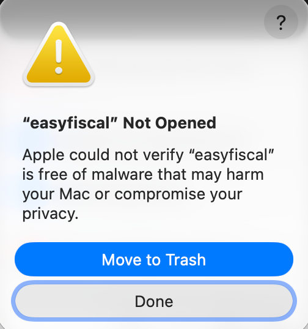

Pobierz Aplikację easyfiscal
Pobierz oficjalny pakiet instalacyjny dla swojego środowiska systemowego:
Checklist Szybkiego Wdrożenia
Odznacz kolejne punkty. Twój postęp jest zapamiętywany automatycznie w przeglądarce:
Ustawienie Drukarki Fiskalnej (Tylko TCP/IP)
easyfiscal komunikuje się z drukarkami fiskalnymi wyłącznie przez protokół sieciowy TCP/IP (kabel Ethernet RJ-45 lub stabilna sieć Wi-Fi). Komunikacja przez porty szeregowe COM nie jest obsługiwana.
Nie znasz drukarki lub nie masz uprawnień serwisowych? Skontaktuj się ze swoim serwisantem fiskalnym i przekaż mu poniższą kartę parametrów. Serwisant skonfiguruje interfejs w 5 minut.
Karta Parametrów dla Serwisanta Urządzeń Fiskalnych
Przekaż serwisantowi następujące wytyczne konfiguracji sieciowej urządzenia:
| Parametr Konfiguracji | Wymagana Wartość dla easyfiscal | Uwagi dla Serwisanta |
|---|---|---|
| Typ interfejsu PC | Sieć lokalna (Ethernet LAN / Wi-Fi) | Wyłącznie protokół TCP/IP. Porty COM / USB VCP są wykluczone. |
| Adresacja IP | Statyczny adres IP (lub stała rezerwacja MAC na routerze DHCP) | Drukarka i komputer z aplikacją muszą znajdować się w tej samej podsieci LAN. |
| Standard 1: Novitus (Mobilna / Stacjonarna LCD) | Protokół: XML | Domyślny port: 8000 | Komunikacja wielowątkowa XML po TCP/IP. |
| Standard 2: Posnet (Stacjonarna OLED) | Protokół: POSNET / Thermal | Domyślny port: 6800 | Połączenie sieciowe TCP, protokół systemowy POSNET. |
| Standard 3: Elzab (Modułowa VFD) | Protokół: Dedykowany sieciowy | Domyślny port: 11115 (lub 6800) | Interfejs Ethernet z aktywnym serwerem wydruków TCP. |
Oficjalne Instrukcje i Oprogramowanie Narzędziowe Producentów
Jeśli konfigurujesz drukarkę samodzielnie, skorzystaj z oficjalnych materiałów producenta sprzętu:
Konfiguracja parametrów IP i test połączenia za pomocą narzędzia Wiking 2 lub menu drukarki.
Konfiguracja interfejsu sieciowego Ethernet i portu TCP 6800 w oficjalnym programie Posnet OPS lub z menu urządzenia.
Weryfikacja parametrów sieciowych TCP/IP za pomocą pakietu serwisowo-diagnostycznego Eureka.
Masz pytania dotyczące drukarki lub raportu dobowego? Zobacz Baza Wiedzy & Q&A: Raporty i Drukarki.
Konfiguracja Systemu OMS / ERP
easyfiscal posiada modułową architekturę integracji. Wybierz swój system zarządzania zamówieniami:
- Aktywuj wtyczkę: W panelu Base przejdź do Integracje → Dodaj integrację → Paragony i włącz wtyczkę.
- Pobierz Token API: Przejdź do Konto (w prawym górnym rogu) → Moje konto → API i skopiuj klucz API do schowka przyciskiem „Kopiuj do schowka”. Będzie potrzebny przy uruchomieniu aplikacji easyfiscal.
- Dodaj pole dodatkowe: W menu przejdź do Zamówienia → Ustawienia → Pola dodatkowe, kliknij „Dodaj pole dodatkowe”. Wpisz nazwę
eParagon_link, wybierz typ pola „Pole tekstowe” i zaznacz zakres Zamówienia. W tym polu system zapisze unikalny adres wygenerowanego e-paragonu. - Zautomatyzuj obieg: W Zamówienia → Automatyczne akcje utwórz regułę:
- Zdarzenie: Zmiana statusu na np. „Spakowane” lub edycja danych.
- Warunek B2C: Chce fakturę: NIE oraz Pole dodatkowe eParagon_link: Wartość niepusta (dla wysyłki e-mail).
- Akcja: Wystaw dokument → Paragon fiskalny (wtyczka easyfiscal) oraz akcja Wyślij e-mail z szablonem zawierającym tag
[eParagon_link].
Integracja opiera się na kluczu API, metadanych zamówienia (Order Metadata) oraz akcjach automatycznych easySales dla zamówień ze wszystkich marketplace'ów:
- Pobierz klucz API: W panelu easySales przejdź do Ustawienia → Dostęp do API (Klucze API), wygeneruj swój klucz API i skopiuj go do schowka. Będzie on wymagany podczas pierwszego uruchomienia programu easyfiscal przy wyborze źródła danych
easysales. - Utwórz akcję automatyczną: W panelu easySales w Akcje automatyczne dodaj regułę
Tworzenie paragonuze statusem Aktywne. - Wyzwalacz i warunki B2C:
- Warunek 1:
Kraj wysyłkowy→ Jest równy →Poland. - Warunek 2:
Kod firmy klienta→ Jest pusty (zamówienia konsumenckie B2C). - Warunek 3: Status zamówienia (np. Dostawa | Wysłane) lub tag
PARAGON.
- Warunek 1:
- Działanie: Dodaj działanie
Dodaj metadane→ Klucz:FISCAL, Wartość:0. easyfiscal automatycznie pobierze tak oznaczone zlecenia. - Zwrot adresu e-paragonu: Po zarejestrowaniu paragonu easyfiscal uzupełni metadaną
eparagon_link, którą możesz wysłać kupującemu w szablonie e-mail:{{ order.meta_data.eparagon_link }}.

Pełna dwukierunkowa integracja z systemem Sellasist: pobieranie zamówień do fiskalizacji, obsługa masowego wystawiania paragonów oraz zwrot linku do e-paragonu w polu dodatkowym.
- Pobranie klucza API:
- W menu bocznym wybierz: Obsługa sklepu → Integracje → Klucze API.
- Kliknij przycisk „Dodaj klucz”.
- Wpisz wyświetlaną nazwę (np.
API easyfiscal), kliknij „Wygeneruj nowy” przy polu Klucz API, a następnie zapisz formularz przyciskiem „Zapisz”. - Skopiuj wygenerowany KLUCZ API – wkleisz go do programu easyfiscal jako token integratora Sellasist.
- Dodanie pola dodatkowego „eParagon_link”:
- Przejdź do zakładki: Sprzedaż → Zamówienia → Dodatkowe pola (lub Pola dodatkowe).
- Kliknij zielony przycisk „Dodaj pole”.
- Uzupełnij formularz:
- Nazwa:
eParagon_link - Rodzaj pola: Pole tekstowe
- Zawartość pola: dowolna
- Nazwa:
- Kliknij niebieski przycisk „Zapisz”. W tym polu aplikacja umieści bezpośredni link do hubu easyfiscal, z którego klient może pobrać e-paragon w formacie JSON oraz wizualizację PDF/HTML.
- Wystawianie e-paragonu w panelu Sellasist:
- Przejdź do listy zamówień: Sprzedaż → Zamówienia.
- Zaznacz wybrane zamówienia konsumenckie (checkbox po lewej stronie).
- Z górnego menu masowych operacji rozwiń listę „Generuj dokumenty” i wybierz „Wystaw paragony”, a następnie zatwierdź klikając „Wykonaj”.
- Aplikacja easyfiscal pobierze oznaczone zamówienia, zafiskalizuje je na drukarce i automatycznie uzupełni pole
eParagon_linkw karcie zamówienia.
Aktywacja Aplikacji easyfiscal
Uruchom aplikację na stacji roboczej lub serwerze lokalnym, wprowadź dane licencyjne i autoryzuj połączenie.
1. Pierwsze uruchomienie i konfiguracja
Po pobraniu i rozpakowaniu pakietu uruchom plik easyfiscal. Kreator zapyta o kilka podstawowych informacji:
- Token licencyjny easyfiscal: Wklej swój unikalny klucz otrzymany w e-mailu po zakupie subskrypcji.
- Wybór źródła danych: Wybierz swój system (
baselinker[dla Base],easysaleslubsellasist). - Token API Twojego OMS: Wklej token / klucz API pobrany w Kroku 2.
- Wybór profilu drukarki: Wybierz producenta (
NOVITUS,POSNETlubELZAB). - Adres IP drukarki: Wprowadź lokalny adres IP drukarki (np.
192.168.1.150) oraz port TCP (np.8000lub6800).
Ze względu na mechanizm zabezpieczeń Apple Gatekeeper, przy pierwszej próbie uruchomienia aplikacji w systemie macOS może pojawić się okno ostrzegawcze z komunikatem:

Jak jednorazowo odblokować aplikację na macOS:
- Gdy pojawi się powyższe okno, kliknij „Done” (lub „Gotowe”). Nie wybieraj opcji „Move to Trash”.
- Otwórz na Macu Ustawienia systemowe (System Settings).
- Przejdź do zakładki Prywatność i ochrona (Privacy & Security).
- Przewiń w dół do sekcji Ochrona (Security).
- Zaraz pod sekcją zobaczysz komunikat o zablokowaniu programu easyfiscal. Kliknij przycisk „Otwórz mimo to” (Open Anyway).
- Potwierdź operację hasłem administratora lub czytnikiem Touch ID.
2. Plik konfiguracyjny (easyfiscal.cfg)
Wszystkie parametry zapisywane są w pliku konfiguracyjnym w katalogu domowym użytkownika:
# macOS:
~/Library/Application Support/easyfiscal/easyfiscal.cfg
# Windows:
C:\Users\twoja_nazwa\AppData\Roaming\easyfiscal\easyfiscal.cfg
# Linux:
~/.config/easyfiscal/easyfiscal.cfgUruchomienie Procesu i Test Zamówienia
Sprawdź działanie całego łańcucha w praktyce – od zmiany statusu w OMS po wygenerowanie e-paragonu.
Jak przeprowadzić test:
- Utwórz lub wybierz testowe zamówienie konsumenckie (B2C) w Twoim systemie OMS (Base / easySales / Sellasist).
- Upewnij się, że pole NIP firmy jest puste (sprzedaż konsumencka podlegająca fiskalizacji).
- Zmień status zamówienia na wyzwalający fiskalizację (np. „Spakowane” lub dodaj tag
PARAGON). - W ciągu maksymalnie 60 sekund aplikacja easyfiscal pobierze dane, zarejestruje dokument w pamięci drukarki fiskalnej przez sieć TCP/IP i zwróci link do e-paragonu.
- Otwórz zamówienie w panelu OMS i upewnij się, że w polu
eParagon_linkpojawił się unikalny adres URL.
Know-How & Często Zadawane Pytania (Q&A)
Konkretne odpowiedzi na pytania techniczne i operacyjne dotyczące codziennej eksploatacji easyfiscal:
❓ Dlaczego obsługiwana jest wyłącznie komunikacja TCP/IP, a nie porty COM?
Połączenie sieciowe przez protokół TCP/IP (kabel Ethernet RJ-45 lub stabilne Wi-Fi) gwarantuje stabilność transmisji, odporność na błędy wirtualnych sterowników USB-COM oraz umożliwia uruchomienie aplikacji na dowolnym komputerze lub serwerze w sieci lokalnej bez konieczności fizycznego podpinania kabla do każdego stanowiska.
❓ Kiedy i jak należy wykonywać fiskalny raport dobowy?
Zgodnie z przepisami prawa podatkowego, fiskalny raport dobowy należy wykonać po zakończeniu sprzedaży w danym dniu, nie później niż przed rozpoczęciem sprzedaży w dniu kolejnym. Nie każda drukarka posiada funkcję automatycznego raportu dobowego – zależy to od oprogramowania układowego (firmware) i modelu urządzenia. Jeżeli Twoja drukarka nie wykonuje raportu automatycznie, należy go wywołać z klawiatury urządzenia lub programu narzędziowego producenta.
❓ Co zrobić, gdy na wyświetlaczu drukarki pojawi się błąd lub blokada?
W drukarkach Novitus jakikolwiek komunikat ostrzegawczy lub zacięcie papieru blokuje kolejkę transmisji. Należy odczytać komunikat, usunąć przyczynę i wcisnąć klawisz „C” na klawiaturze drukarki, aby przywrócić urządzenie w stan gotowości. W drukarkach Posnet należy sprawdzić stan papieru i zrestartować urządzenie w razie potrzeby.
❓ Co w sytuacji chwilowego braku połączenia z internetem?
Komunikacja komputera z drukarką odbywa się w sieci lokalnej (LAN), więc chwilowy brak internetu nie wstrzymuje natychmiastowo procesu fiskalizacji. Drukarka online buforuje dane w pamięci chronionej i przesyła je do Centralnego Repozytorium Kas (CRK) automatycznie po wznowieniu dostępu do sieci.
❓ Jakie są ścieżki do logów diagnostycznych w razie problemu?
W przypadku konieczności diagnostyki technicznej pliki dziennika operacji znajdziesz w:
Windows: C:\Users\użytkownik\AppData\Local\easyfiscal\logs
macOS: ~/Library/Logs/easyfiscal/
Linux: ~/.local/share/easyfiscal/logs/Wsparcie techniczne: support@easyfiscal.pl | Infolinia: +48 455 568 668.
Podstawy Prawne i Wymogi Formalne E-Paragonu
Informacje dla działu księgowości, doradców podatkowych oraz audytorów:
Kluczowe wymogi techniczne i archiwizacja
- Pamięć fiskalna i CRK: E-paragon jest rejestrowany bezpośrednio w pamięci fiskalnej certyfikowanej drukarki online i raportowany do Centralnego Repozytorium Kas (CRK).
- Trwałość dokumentu: Cyfrowy format e-paragonu w chmurze easyfiscal zabezpiecza dokument przed wyblaknięciem i utratą, gwarantując kupującemu 90 dni dostępu do dowodu zakupu w sprawach rękojmi i gwarancji.
- Ewidencja księgowa: Podatnik rozlicza podatek należny na podstawie okresowych raportów fiskalnych dobowych oraz miesięcznych generowanych przez drukarkę online.